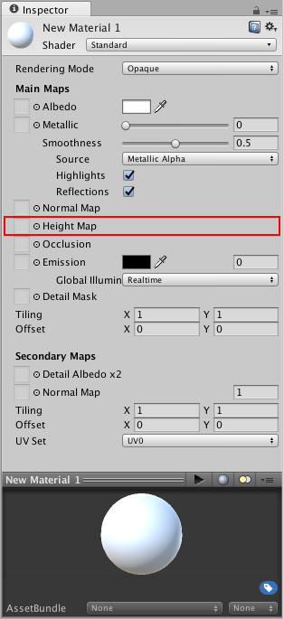

Heightmap

Height mapping (also known as parallax mapping) is a similar concept to normal mapping, however this technique is more complex - and therefore also more performance-expensive. Heightmaps are usually used in conjunction with normalmaps, and often they are used to give extra definition to surfaces where the texture maps are responsible for rendering large bumps and protrusions.
While normal mapping modifies the lighting across the surface of the texture, parallax height mapping goes a step further and actually shifts the areas of the visible surface texture around, to achieve a kind of surface-level occlusion effect. This means that apparent bumps will have their near side (facing the camera) expanded and exaggerated, and their far side (facing away from the camera) will be reduced and seem to be occluded from view.
This effect, while it can produce a very convincing representation of 3D geometry, is still limited to the surface of the flat polygons of an object's mesh. This means that while surface bumps will appear to protrude and occlude each other, the "silhouette" of the model will never be modified, because ultimately the effect is drawn onto the surface of the model and does not modify the actual geometry.
A heightmap should be a greyscale image, with white areas representing the high areas of your texture and black representing the low areas. Here's a typical albedo map and a heightmap to match.

From left to right in the above image:
- A rocky wall material with albedo assigned, but no normalmap or heightmap.
- The normal assigned. Lighting is modified on the surface, but rocks do not occlude each other.
- The final effect with normalmap and heightmap assigned. The rocks appear to protrude out from the surface, and nearer rocks seem to occlude rocks behind them.
Often (but not always) the greyscale image used for a heightmap is also a good image to use for the occlusion map. For information on occlusion maps, see the next section.